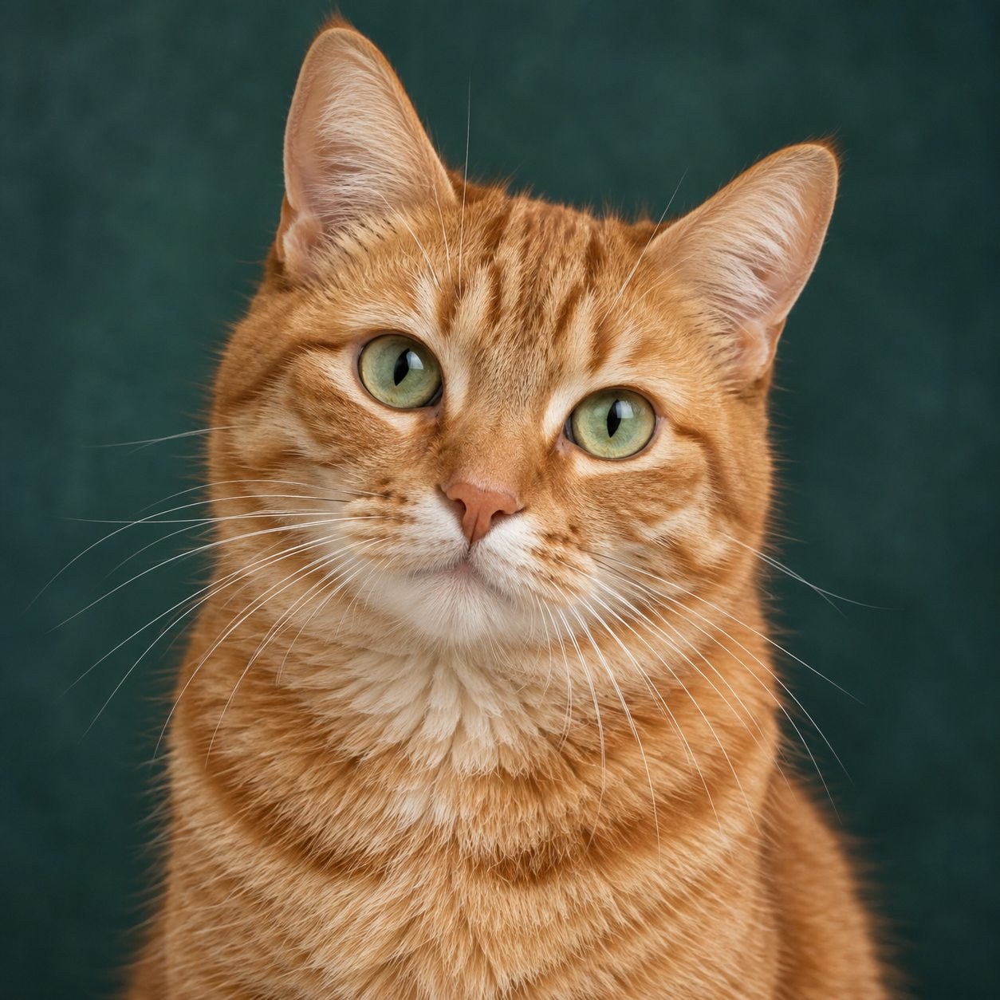

Choose a clear photo
Close portraits with simple backgrounds preserve the features that make your pet recognizable.
Your pet, one stitch at a time
Choose the size and thread count, compare the result, then download a clear chart. Your photo is processed in this browser.

Meet Maple, our sample modelPattern studio
Nothing is uploaded. Processing happens locally.
Select a thread color, then paint or erase directly on the grid.
Use a close, well-lit photo with your pet filling most of the frame.
A calmer way to start
Close portraits with simple backgrounds preserve the features that make your pet recognizable.
Adjust the stitch width and number of colors until the detail and workload feel right.
Download a color chart or print a symbol version with the thread list beside you.
Before you begin
No. This first version processes the image entirely inside your browser. Closing the tab clears the working image.
The chart uses a practical starter palette with familiar DMC-style references. Screen colors vary, so compare the listed skeins in person before buying a large quantity.
Use a sharp, evenly lit image where the eyes are visible and your pet fills most of the frame. Busy backgrounds consume stitches without helping the portrait.
No. Pattern creation and export are free during the prototype stage while we improve the quality with real stitchers.